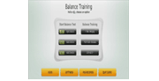
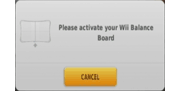

4 |
Controller Setup |
 |
How to hold the controller depends on whether you are using the Wii Remote by itself or in combination with other accessories.
 Note: Always refer to the instruction manual for each controller that you use.
Follow the steps below to set up your Wii Balance Board for use.
If the Wii Balance Board is synchronised to your Wii console:

If the Wii Balance Board is not synchronised to your Wii console:



Note: If your strap lock has a lock lever, press the lock lever down until you hear a click. This will prevent the strap lock from loosening.
|


 |
 |
 |